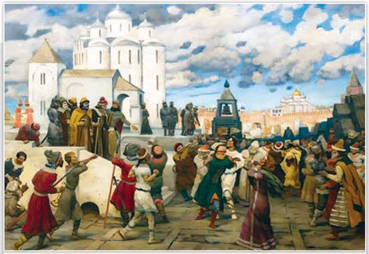
Народный суд на Новгородском вече. Художник К. Юон. 1943 г. Иркутский областной художественный музей имени В. Сукачёва
Вече существовало в Новгороде, Киеве, Пскове, Полоцке и др. Местами для таких собраний были площади перед соборами, рыночные площади, иногда даже открытое поле. На вече решались важнейшие вопросы внутреннего управления, торговых и хозяйственных отношений, внешней политики и суда.
РОССИЯ
МИР
1. Территория и население. Новгородская земля, богатая лесами, озёрами и реками, отличалась холодным климатом и неплодородием почв. Плотность населения была низкой, тем не менее новгородцы постоянно раздвигали границы своих земель. Дружины лихих молодцов на узких лодках-ушкуях шли всё дальше на север и северо-восток. Их называли ушкуйниками. Отряды ушкуйников занимались разбоем и грабежом, искали новых финно-угорских данников, отчасти расширяли промысловые угодья и занимались торговым промыслом. С их помощью молодые новгородские бояре столбили для своих родов новые вотчины.
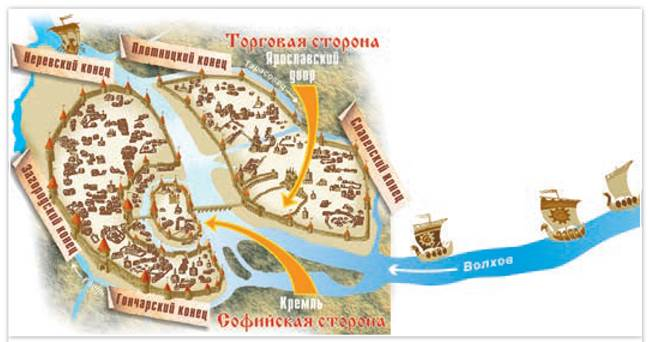
План средневекового Новгорода
Река Волхов делила Новгород на две части: правобережную Торговую с рынком и левобережную Софийскую, на которой стояли Детинец (Новгородский кремль) и символ Новгорода — Софийский собор. Торговая сторона имела два конца (района), а Софийская — три.
Основу славянского населения Новгородчины составляли ильменские словене и северные кривичи, пришедшие к Волхову и Чудскому озеру ещё в VII—VIII вв. Обитавшие здесь финно-угры слились с ними или же стали их данниками. Осели в Новгороде и варяги. В XI—XII вв. в Новгородскую землю прибывали бежавшие от половецких набегов жители Южной Руси.
Частые бедствия — голод, пожары, наводнения и эпидемии выработали у новгородцев упорный характер. В бою они были смышлёны и дерзки. Тяжеловооружённое пехотное новгородское ополчение успешно противостояло конным дружинам. Зажиточные горожане имели защитные доспехи.
2. Развитие экономики. Свободные сельские жители Новгородской земли разводили коров, овец, свиней, коз, лошадей, выращивали лён, сеяли просо и рожь. Но небогатые урожаи вынуждали новгородцев покупать зерно в Суздальской земле. Большой доход им приносила дань с карелов, веси, чуди и прочих данников. В X—XII вв. дань брали мехами, в XIII—XIV вв. — ещё и деньгами, грубыми шерстяными тканями, промысловыми товарами.
Промыслы составляли основу новгородской экономики. Смерды, а главное, зависимые крестьяне (сироты), жившие в боярских вотчинах, занимались бортничеством, охотились на пушного зверя, ловили рыбу, добывали речной жемчуг, били моржей и тюленей ради кости и ворвани (жира). Ткани, пропитанные ворванью, становились непромокаемыми. Из них делали паруса.
Новгородская боярская вотчина принадлежала не отдельному хозяину, как в Суздальской Руси, а находилась в коллективной собственности боярского рода. Каждое поколение бояр присоединяло к вотчине новые угодья. Оброк с крестьян собирали промысловыми товарами. Пушнину, воск, рыбу, мёд свозили на боярские дворы, откуда оптом продавали купцам.
СВИДЕТЕЛЬСТВО ЭПОХИ
Содержание некоторых новгородских берестяных грамот (нумерация указана по времени обнаружения)
1. Роспись доходов с нескольких сёл. 2. Роспись пушного оброка. 5. От Давыда и Есифа к Матфею (просьба защитить крестьянина от закабаления). 7. Фрагмент распоряжений сборщикам податей. 21. К ткачихе о присылке вытканной холстинки. 31. Обязательство крестьян доставлять куницу (подать). 108. Фрагмент записи товаров с ценами. 130. Реестр поставок домотканого сукна. 211. Документ о денежных отношениях в связи с покосами и пашнями.
На основе документа сделайте выводы о хозяйственной жизни новгородцев.
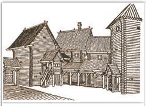
Двор богатого новгородца. Реконструкция
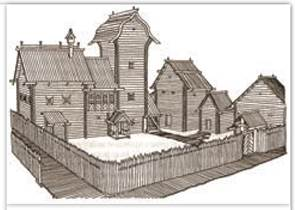
Усадьба новгородского художника Олисея Гречина. Реконструкция
Чтобы дома держали тепло, пол в них стелили высоко от земли, а окна делали небольшие. Хорошая сохранность домов позволяет создавать их довольно точную реконструкцию.
ТОЧКА ЗРЕНИЯ
Из книги историка Ю. Лимонова «Владимиро-Суздальская Русь: Очерки социально-политической истории»
Надо отметить... важную особенность экспорта льна, «национального продукта» Владимиро-Суздальской земли, Новгорода и Пскова, поступавшего в страны как Востока, так и Запада. В Средние века вся золототканая промышленность Средней Азии, Индии, Персии, Среднего Востока, Ближнего Востока, Египта, Малой Азии, Византии, Италии, Испании не могла существовать без льна. Основа для золотой нити была льняной.
Почему лён был ценным предметом внешней торговли русских земель?
Ни один русский город не вёл такой обширной внешней торговли, как Новгород. Развитию торговли способствовало нахождение Новгорода у истоков торговых путей, которые соединяли Северную Европу с Византией, Арабским Востоком и Кавказом. Часть промысловых и ремесленных товаров купцы везли в Суздальскую землю, а часть — за русские рубежи. Из Западной Европы на Русь доставляли ткани, ремесленные изделия, оружие, вина, серебро, золото.
В X в. новгородцы успешно торговали с готландскими купцами. Торговый двор иноземцев стоял в Новгороде, а новгородский — на острове Готланд в Балтийском море. В Новгороде торговцев с Готланда называли готскими купцами. Сохранился договор Новгорода с Готландом, подписанный в начале 1190-х гг. В середине XII в. главным западным партнёром Новгорода на Балтике стал северо-германский союз городов Ганза. С Византией новгородцы торговали при посредничестве крымских городов.
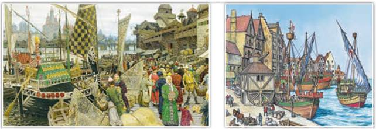
Сравните две иллюстрации. Где изображён Новгород, а где — Ганза? По каким признакам вы это определили?
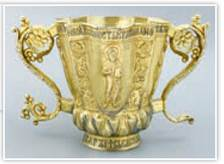
Кратир. XII в. Новгородский государственный объединённый музей-заповедник
Кратир — большая серебряная с позолотой чаша для причастия, был изготовлен новгородским мастером по имени Братило.
Новгородские купцы объединялись в торговые товарищества купцов-суконников, купцов-рыбников и т. д. Они имели свои уставы, в подвалах церквей хранили казну и товары. Влиятельное товарищество торговцев воском при церкви Иоанна Предтечи на Опоках называлось «Иванское сто». Новгород являлся не только торговым, но и крупным ремесленным центром. В мастерских трудились оружейники, гончары, ювелиры, кожевенники, ткачи, столяры. По всей Руси было известно искусство северных плотников и каменщиков.
Новгород долгое время был единственным городом, имевшим каменную крепость. Новгородские кузнецы умели делать «самозатачивающиеся» ножи и ковать булатные мечи. Секрет булата (особо прочной стали) пришёл в Новгород с Востока. В Западной Европе ценили булатное русское оружие. С Запада к новгородцам попал секрет изготовления хитроумных и надёжных чешских замков.
3. Вечевые традиции Новгорода. Большинство жителей Новгорода (свободных и зависимых) составляли «чёрные», или «меньшие люди» — ремесленники, городская беднота, смерды, холопы. Они, как и многие «лучшие люди» (купцы, ростовщики, богатые мастера), жили, арендуя дома, принадлежавшие боярам. Археологи развеяли предположение о том, что названия улиц Новгорода отражали профессии и положение в обществе новгородцев. На улицах Холопьей, Великой, Щитников, Гончарной рядом проживали бояре, купцы, духовенство, мастера, холопы.
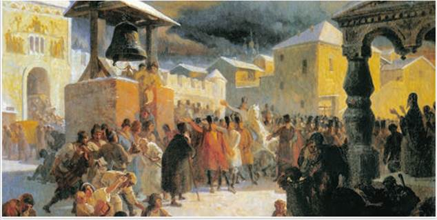
Новгородское вече. Художник В. Худяков. 1861 г.
Вечевая площадь на Ярославлевом дворе (место двора Ярослава Мудрого) занимала около 1500 м2. На ней, сидя на скамьях, могло разместиться не более 500 человек. Голосовали на вече, вероятно, берестяными «бюллетенями». В Великом Новгороде археологи нашли берестяные «листочки» с нацарапанными на них именами в родительном падеже.
До середины XIV в. новгородское боярство не было едино. Бояре из разных концов соперничали друг с другом и нуждались в поддержке жителей своего конца. История Новгородской республики началась в 1136 г. Тогда вече «указало путь из города» — изгнало князя Всеволода Мстиславича. «Не блюдёт князь смердов, — гласил приговор, — ищет чужих владений, первый бежал с поля битвы». С этого решения князей в Новгород стало приглашать вече. Без согласия новгородцев князь не мог принимать важных решений. С приглашённым князем новгородцы заключали договор. Удары особого колокола собирали новгородцев на вече. Вначале на вече присутствовали все самостоятельные хозяева из «лучших» и «чёрных людей». Народ криками выражал своё одобрение или недовольство. К концу XII в. на вече собирались в основном «лучшие люди».
Бояре, купцы и «чёрные люди» каждого конца выступали совместно, чтобы на вечевом сходе избрать посадником своего ставленника. Иногда концы объединялись в союзы, чаще в рамках Торговой и Софийской сторон. Вече могло перерасти в схватку. Противники сходились на мосту через Волхов и бились так, что мост «размётывали».
4. Управление Новгородом. Посадник был высшим должностным лицом в Новгороде. Символы его власти — вечевая трибуна и посох — изображались на новгородских печатях. Посадник руководил внутренней и внешней политикой: созывал вече, вершил суд, заключал договор с князем, возглавлял войско, вёл дипломатические переговоры. Недовольство действиями посадника порой приводило не только к переизбранию, но и к разграблению его двора, грозило смертью ему и его семье.
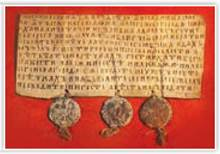
Договорная грамота Новгорода об условиях торговли с немецкими купцами. 1301 г. Новгородский государственный объединённый музей-заповедник
Договорная торговая грамота Новгорода с немецкими купцами скреплена печатями тысяцкого, посадника и князя. Объясните почему.
Интересы торговцев и ремесленников в городском управлении представлял тысяцкий. Он ведал судом по торговым делам, в военных походах был одним из руководителей народного ополчения. Выбирали тысяцкого из наиболее знатных боярских родов на вече.
Большую роль в Новгороде играл архиепископ (владыка). Он вершил церковный суд, хранил казну и архив, опекал новгородское летописание, которое велось при Софийском соборе, часто брал на себя роль новгородского посла. Архиепископ управлял вотчинами собора Святой Софии. На средства церкви снаряжался особый полк. Новгородского владыку выбирали на вече, киевский митрополит его утверждал (с 1156 г.). Владыка носил на голове белый клобук.
ТОЧКА ЗРЕНИЯ
Из книги В. Тулупова «Русь Новгородская»
Владычество в Новгороде было одним из важнейших государственных институтов республиканского времени, сравнимым с постами посадника и тысяцкого. Свидетельство тому — регулярное с середины XII в. избрание новгородского епископа из среды местного духовенства, проводимое светскими лицами на вече. Не подлежит сомнению тот факт, что система выбора владыки на вече, не фиксируемая в других городах Руси, является одним из результатов политических и социальных реформ XII в. в Новгороде.
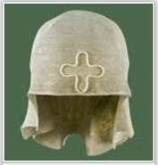
Клобук белый. XIV в.
Новгородский государственный объединённый музей-заповедник
Как автор объясняет особый порядок назначения главы церкви в Новгороде?
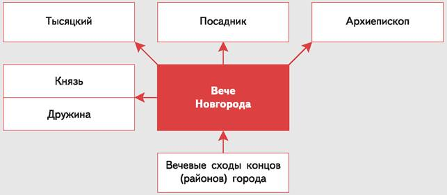
На основе схемы расскажите об управлении Новгородом.
Вече обсуждало вопросы войны и мира, налогов, выбирало посадника. На вече решали, кого из князей звать в Новгород. Князя приглашали вместе с его дружиной и содержали за счёт города. Князь играл роль главного воеводы. Он не имел права вмешиваться во внутреннюю жизнь Новгорода, без согласия горожан не мог собрать вече. Князь не владел вотчинами в Новгородской земле и даже жил за городом в отдельной резиденции. Строптивым князьям горожане «указывали путь из Новгорода» — попросту изгоняли, как это было с князем Всеволодом Мстиславичем в 1136 г.
Чтобы подчеркнуть единство Новгородской земли, все её города назывались пригородами. В Ладоге, Изборске, Торжке, Пскове имелось своё вече. Их представители порой участвовали в новгородском вече. В самом Новгороде существовали кончанские и уличанские вечевые собрания. На них выбирали старост, а также их помощников — сотских.
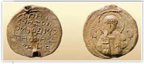
Печать новгородского посадника Дмитра Завидича с благопожелательной надписью на русском языке. 1117—1118 гг. Новгородский государственный объединённый музей-заповедник
Круг владельцев актовых печатей был ограничен. Археологи обнаружили 4 печати, принадлежавшие посаднику Дмитру Завидичу, хотя свои обязанности он исполнял менее года.
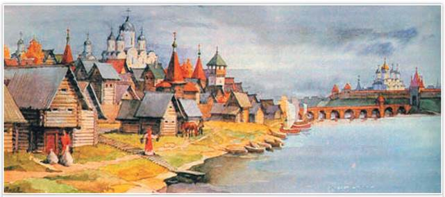
Вид Великого Новгорода. Фрагмент. Реконструкция с гравюры
Какая река делила Великий Новгород на две части (стороны)? Как называлась каждая из сторон города?
Сельские жители не имели особых прав. Сельские владения Новгорода делились на пять пятин, каждая из которых подчинялась одному из концов, собиравших здесь дань. В пятине был староста из местных жителей. Чудь и другие финно-угорские данники порой отказывались платить дань. Тогда новгородцы или дружина приглашённого князя совершали походы на непокорных.
ПОДВЕДЁМ ИТОГИ
Особая форма политического строя сложилась в крупнейшей по территории Новгородской земле. Высший орган власти — новгородское вече могло приглашать князей и лишать их новгородского стола, а также избирать важнейших должностных лиц.
Вопросы и задания
Работаем с хронологией
Что произошло раньше: изгнание из Новгорода князя Всеволода Мстиславича или взятие Киева войсками Андрея Боголюбского?
Работаем с источником
Прочитайте отрывок из книги историка Е. Шмурло «История России. 862—1917» и ответьте на вопросы.
1. Ограничения княжеской власти.
Посадник и тысяцкий в городе Новгороде — главные правительственные сановники: в руках посадника сосредоточилась гражданская власть, у тысяцкого — военная. Их выбирало вече, так что они являлись представителями и защитниками народных интересов и по своему положению оказывали сильное влияние на решения князя.
Таким образом:
2. Права веча.
1. Как осуществлялся контроль за деятельностью князя?
2. Как вы думаете, почему новгородцы ввели жёсткие ограничения власти князя?
Работаем с понятиями
Самостоятельно составьте в тетради и заполните схему «Государственные обязанности посадника, архиепископа, тысяцкого».
ДОПОЛНИТЕЛЬНЫЕ МАТЕРИАЛЫ
«УЧИТЕЛЮ И УЧЕНИКУ».
Материалы к параграфу на портале «История.РФ».